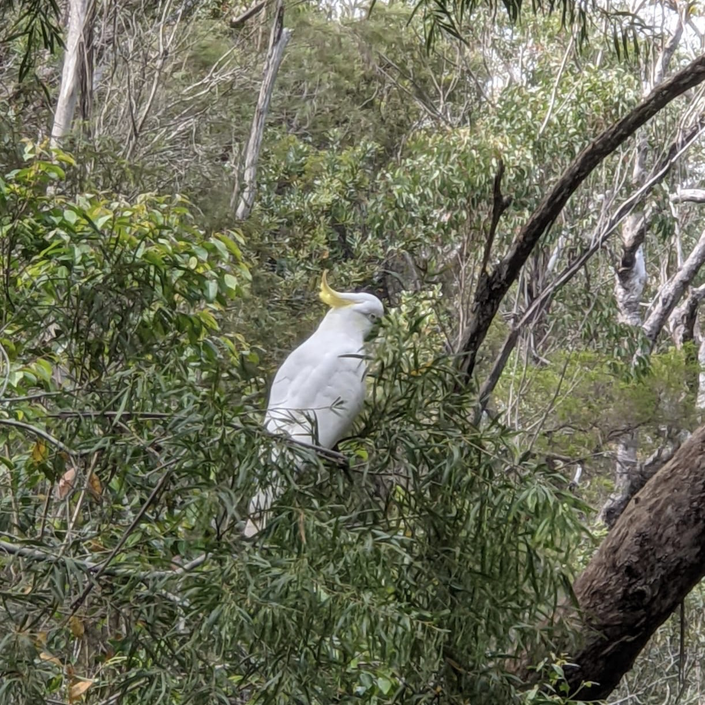
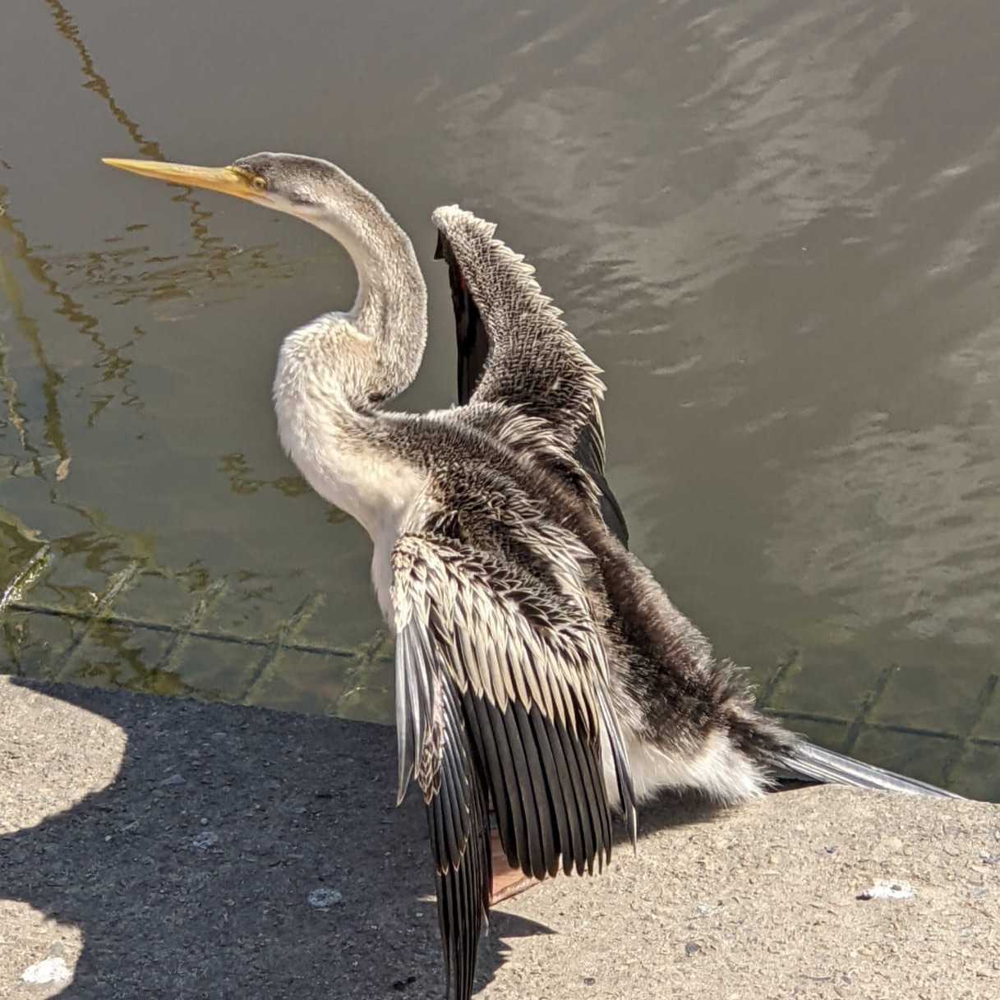
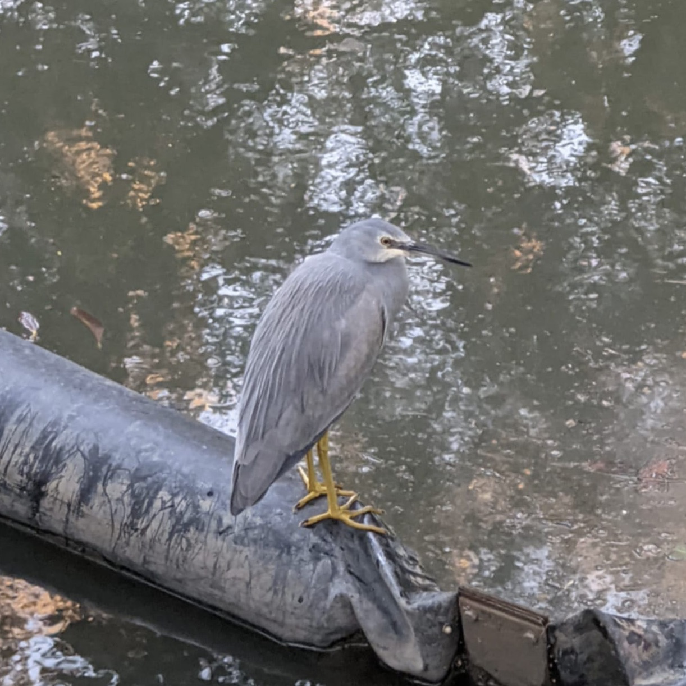
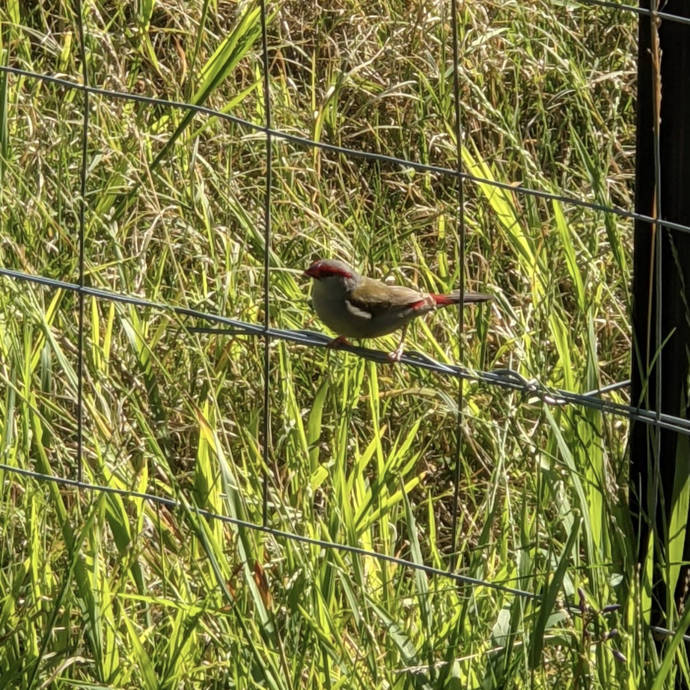
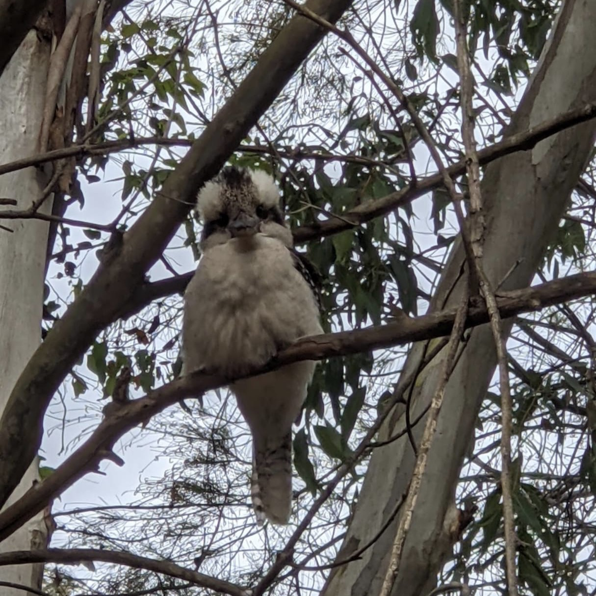
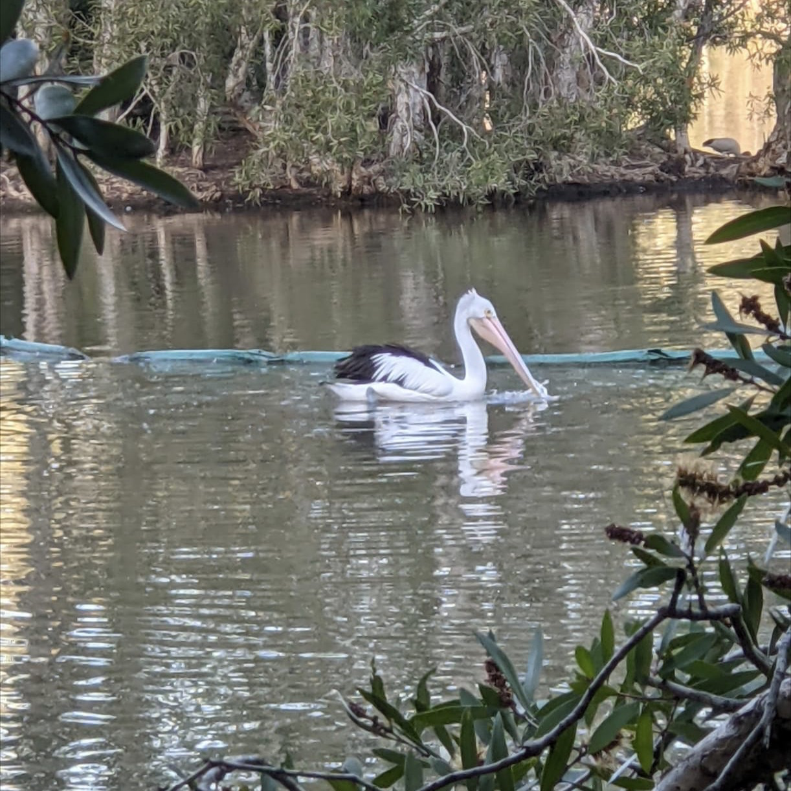
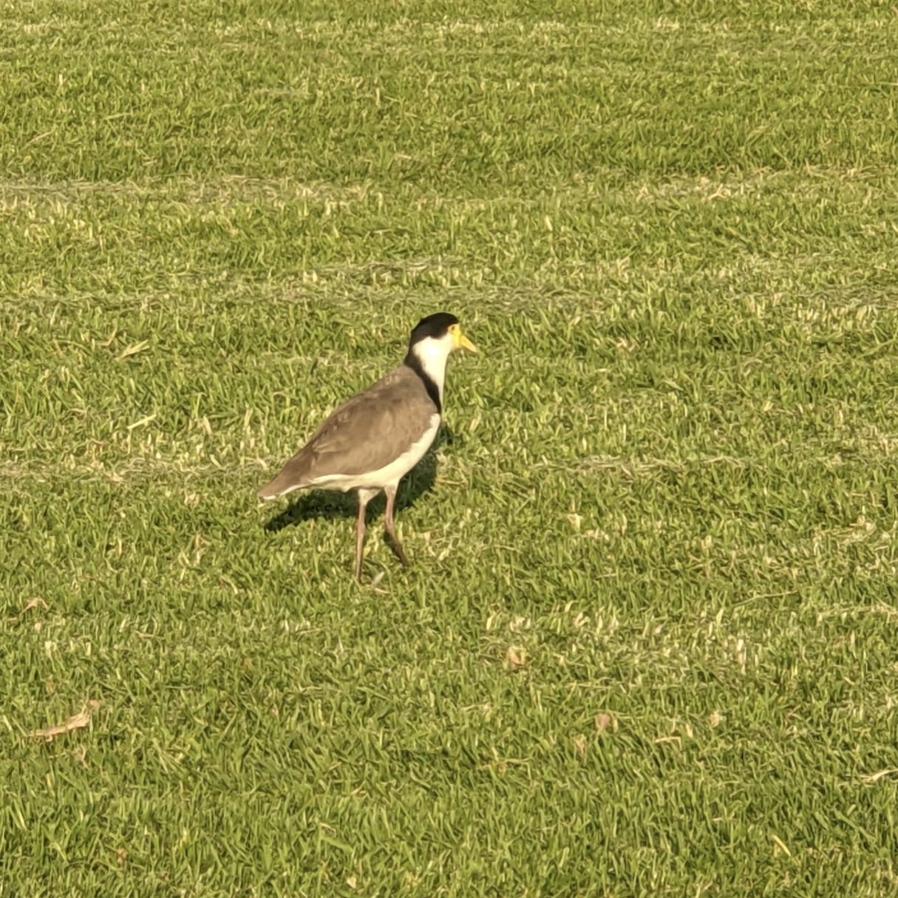
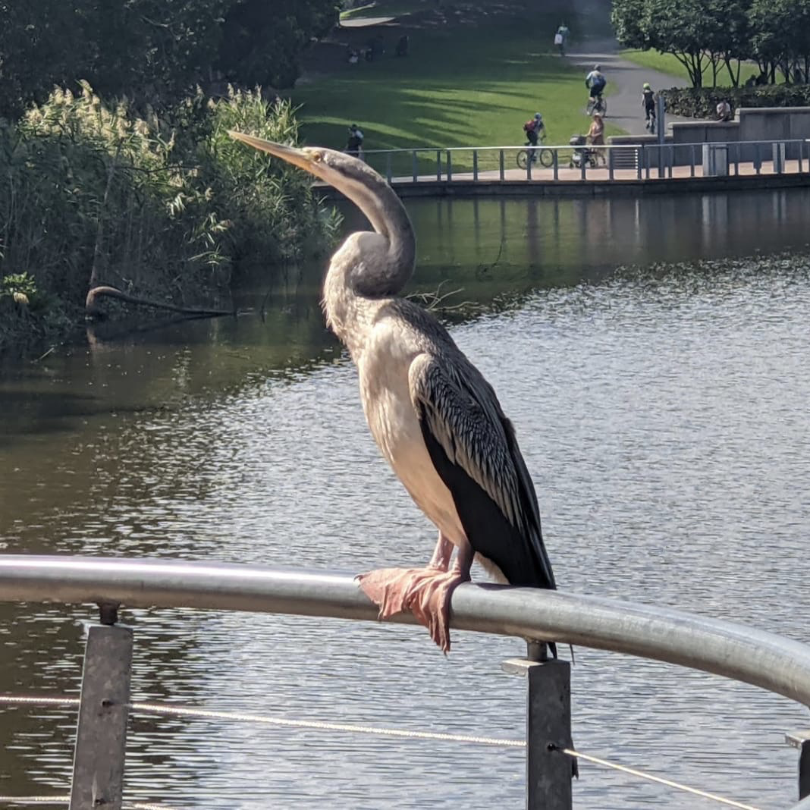
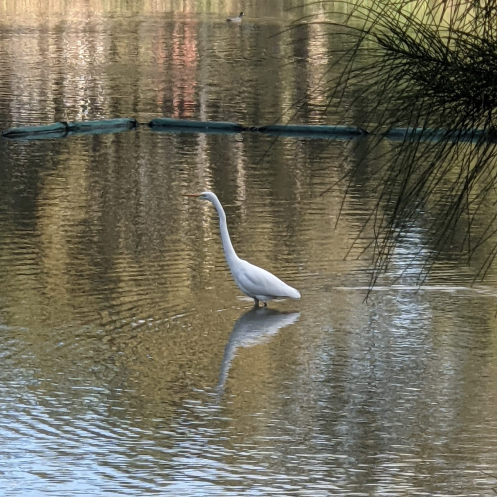
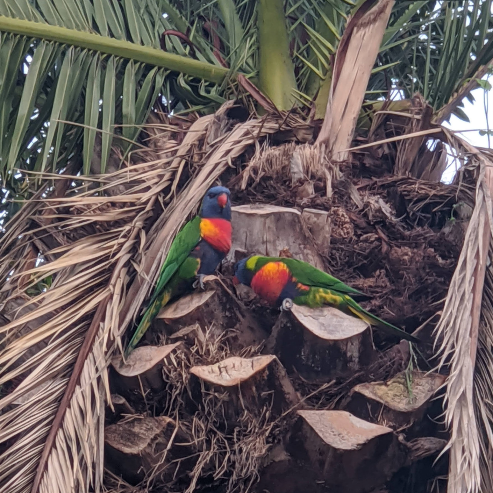

Birds










About us
We are a team of people passionate about birds. We offer to you a magnificent opportunite to see the most beaultiful birds around Australia and take extraordinares photos
Australia has about 900 endemic/migratory species and our tour area is home to over 300 of these at different times of the year. Our 1 or 2 day tours are an excellent way of seeing many of Australia's unique bird species.
Birding Tours operates several specific trips around Sydney. We can also organise custom tours around New South Wales or anywhere in Australia. Our customised tours in recent years have ranged from 1 day to 6 weeks. No Australian bird is too hard for us to look for. Whether you need to see specific Australian endemics or families we can organise your logistics and itinerary without fuss. We can even organise a private Night Parrot search if you’re dedicated enough!
All our tours can be conducted at a pace to suit your needs from relaxed to extreme, but all will concentrate on locating as many species as possible across various habitats.